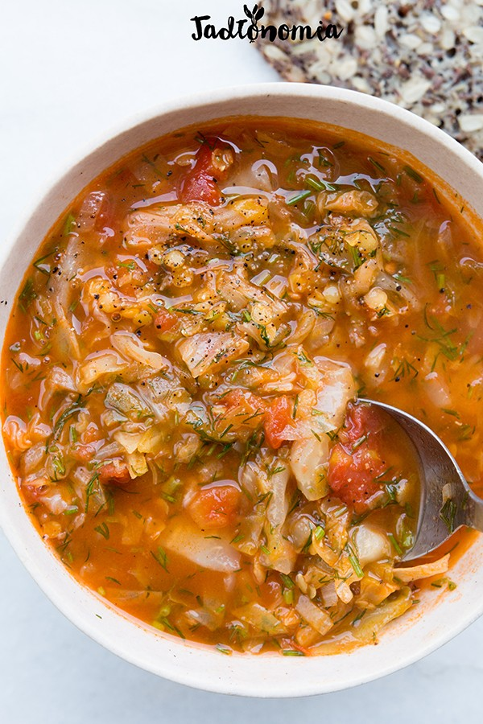

Czas przygotowania: do 45 minut
Składniki na 5 - 6 porcji:
1/2 kapusty / 500 g
1 cebula
olej
1 łyżeczka wędzonej papryki
1/2 łyżeczki ostrej papryki
1/2 łyżeczki słodkiej papryki
spora szczypta soli
1/4 szklanki soczewicy czerwonej
1 puszka pomidorów
szczypta cukru lub dowolnego słodzika
1 1/4 litra bulionu
pęczek koperku
1 – 2 łyżeczki soku z cytryny
sól i czarny pieprz
Przygotowanie:
Kapustę posiekać na cienkie paski, głąb zetrzeć na tarce. Cebulę pokroić w kostkę, na dnie dużego garnka rozgrzać olej. Dodać cebulę, zamieszać, a następnie wsypać paprykę słodką, ostrą, wędzoną oraz szczyptę soli. Smażyć przez 2 – 3 minuty do momentu, aż cebule będzie słodka i przezroczysta. Wtedy do garnka dodać posiekaną kapustę i chwilę mieszać do momentu, aż utraci objętość. Dodać soczewicę, pomidory i dusić wszystko przez 5 minut. Pęczek koperku posiekać – ogonki oraz delikatne, puszyste gałązki. Puszyste gałązki odłożyć na bok, a do garnka dodać posiekane ogonki. Wlać bulion, zupę przykryć i gotować 15 minut lub do momentu, aż soczewica będzie miękka. Na koniec do zupy wsypać resztę posiekanego kopekru i doprawić do smaku sokiem z cytryny, solą oraz pieprzem. Podawać z chlebem lub bez żadnych dodatków.
Propozycja podania:
